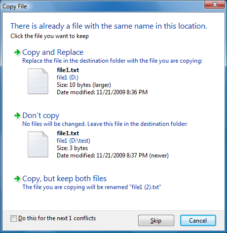
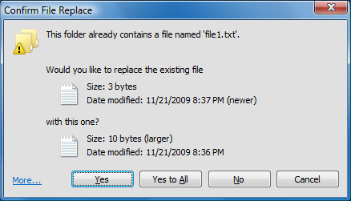
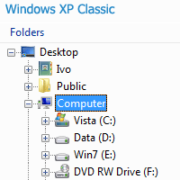
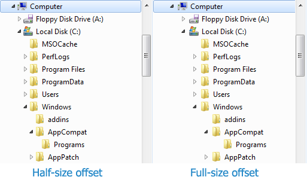
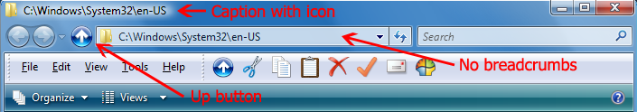

Classic Explorer
Version 1.0.2 – general release
Classic
Explorer is a plugin for Windows Explorer that:
- Adds a toolbar to Explorer for some common operations (Go
to parent folder, Cut, Copy, Paste, Delete, Properties, Email). More
buttons can be added manually
- Replaces the copy UI in Vista and Windows 7 with the more user-friendly “classic” version similar to Windows XP
- Handles Alt+Enter in the folder panel of Windows Explorer and shows the properties of the selected folder
- Has options for customizing the folder panel to look more like the Windows XP version or to not fade the expand buttons
- Can show the free disk space and the total file size in the status bar
- Can disable the breadcrumbs in the address bar
New copy UI
In Vista when you copy files and there is a conflict you are presented
with this:

What’s wrong with it?
Well, for
starters it is half a screen full of text that you have to read. Also
it is not immediately clear what parts of it are clickable. You have to
move the mouse around to discover the UI like in a Lucas Arts
adventure game. And finally the keyboard usability is awful. To
tell it
“yes, I know what I’m doing, I want to overwrite all files” you have to
press Alt+D, up, up, up, Space! It is harder than performing the Akuma
Kara Demon move in Street Fighter 3. There is a time and a place
for
that stuff and copying files is not it.
The Classic Explorer plugin brings back the simpler dialog box from Windows XP:

It
is immediately clear what is clickable (clue – the buttons at the
bottom), there is easy keyboard navigation (press Y for “Yes”, A to
copy all files) and you can still see which file is newer and which is
larger. And of course just like in Windows XP, holding down Shift while clicking on the No button means "No to All" (or just press Shift+N).
If you click
on More… you will get
the original dialog from Windows. From there you
will see all the details and you’ll get an extra option to “Copy, but
keep both files”.
Important Note: Only the UI is replaced. The underlying system that does the actual copying is not affected.
Alt+Enter in the folder panel
Alt+Enter is
universal shortcut across Windows to bring up the properties of the
selection. But in Vista and Windows 7 it doesn’t work in the left
panel that shows the folders. It works fine on the right where the
files are. This is broken compared to Windows XP where Alt+Enter works
in both places.
To solve the
problem, the Classic Explorer plugin detects when you press Alt+Enter
and shows the properties for the currently selected folder.
Toolbar for Windows Explorer
Windows
Explorer in Vista doesn’t have a toolbar like the one in Windows XP. If
you want to go to the parent folder you have to use the breadcrumbs
bar. If you want to copy or delete a file with the mouse you have to
right-click and look for the Delete command. The right-click menu gets
bigger and bigger the more shell extensions you have installed, and
finding the right command can take a while.
To solve the problem, the Classic Explorer plugin adds a new toolbar:

The available button are: Go Up, Cut, Copy, Paste, Delete, Properties,
Email, Settings. More buttons can be added by editing the Explorer.ini
file. Check out the "More Settings" section for details.
Hints:
- Hold the Control key when clicking the Up button to open the parent folder in a new Explorer window.
- Hold the Shift key when clicking the Delete button to permanently delete a file
The new toolbar doesn’t show up in Explorer automatically after
installation. You have to do a few things before you can use it:
- Open a new Windows Explorer window (Win key+E)
- Turn on the menu in Explorer – Go to Tools (Alt+T), Folder
Options, the View tab, and make sure “Always show menus” is checked.
- Right click on the menu bar and select “Classic Explorer Bar” to
show the toolbar.
- If that option is not available (you only see “Lock the
Toolbars”) you may have to enable the plugin from Internet Explorer.
Run IE, right click on its toolbar and select “Classic Explorer Bar”.
It will ask you if you want to enable this add-on. Select “Enable”,
then repeat steps 1 through 3 again.
- If even then you don't see the toolbar, maybe the browser
extensions are disabled on your system. This is usually the default for
servers. Open the "Internet Options", go to the "Advanced" tab, and check
the option "Enable third-party browser extensions".
Status bar
In Windows 7 the status bar in Explorer doesn't show the free disk
space and the size of the selected files. Classic Explorer fixes that:

When no files are selected the total size of all files in the folder is shown.
By default the status bar feature is disabled for Windows Vista. It can
still be turned on from the settings. The only benefit you will get
from it is seeing the total size when no files are selected (Vista
doesn't show that).
Note: There is a bug in the Windows 7 Explorer that sometimes doesn't show any text in the status bar. Press F5 to refresh the view and get the status text.
Another note: It goes without saying (but I’ll say it anyway!) that you have to turn on the status bar from the Tools menu if you want to see the file sizes.
Settings
The last
button in the toolbar opens up the Settings dialog box for Classic
Explorer. If you've hidden the Settings button you can right-click on
any button to get the context menu and pick the Settings option.
The settings are:
- Navigation pane style - choose from Windows Vista, Windows XP Classic and Windows XP Simple:

- Don't fade buttons - for XP Simple and Vista modes you can disable fading of the buttons when the folder tree
doesn't have the focus. This is useful if you want to see if a folder
has sub-folders without mousing over it
- Full-size offset for sub-folders - this option makes the sub-folders to be indented by the full size of the folder icon. By default in XP Simple and Vista mode the sub-folders are indented only half of the icon's size:

- Enable Alt+Enter - turns on the Alt+Enter feature in the navigation pane
- Always navigate to the selected folder
- when turned on, if you move up and down the folders with the arrows
keys, Explorer will navigate to the selected folder immediately
- Toolbar buttons - pick which buttons to display in the toolbar, and chose between small and big buttons
- Title bar tweaks - as shown in this image:

- Show Up button in the title bar
- use this to insert the Up button in the title bar of Explorer. If all
you need from the toolbar is the Up button, you can enable this option
and hide the toolbar to save some screen space
- Show caption in the title bar, Show icon in the title bar - customize the look of the caption.
You may have to go to the Folder Options and turn on the setting
"Display the full path in the title bar (Classic folders only)" if you
want to see the full path instead of just the current folder name
- Disable breadcrumbs -
when turned on, the address bar always shows the full path with no
breadcrumbs. It is recommended that you show the Up button as well,
otherwise you won't be able to go to the parent folder with the mouse
- Enable classic copy UI - when turned on, the "file conflict" dialog box is replaced with the one from Windows XP
- For folders too - also replaces the "folder conflict" dialog box
- Show free space and file size - shows the free disk space and the total size of the selected files in the status bar
More Settings
Even more settings are available in the Explorer.ini
text file in the installation folder – usually C:\Program
Files\Classic Shell. From there you can set things like:
SmallIconSize, LargeIconSize – the size of the icons in the toolbar
ForceRefreshWin7 – when this is
1, the Explorer window is forcefully refreshed soon after it is opened
to update the status bar. This is a workaround for a bug in Windows 7
FixFolderScroll – when this is
1, it enables a fix for a bug in Windows 7 that makes the current
folder jump down in the navigation pane when expanded
FixSearchResize – when this is 1, it enables a fix for a bug in Windows 7 that breaks the resizing of the Search box when the Up button is added to the title bar
Search – set this to none to hide the Search box in Explorer
ToolbarSameSize – set this to 1 to make all buttons the same size
ToolbarListMode – set this to 1 to show the button text next to the icon instead of under the icon
UpIconNormal, UpIconHot, UpIconPressed,UpIconDisabled, UpIconSize – provide alternate icons for the Up button in the Explorer title bar
ToolbarItems – lists the
buttons of the toolbar. Use this setting to create your own toolbar
with custom icons, order of buttons, and more. You can add commands
like Undo, Redo, Refresh, Select All, etc
The text file contains detailed description of each setting as well as instructions how to change it.
Note: Changes to the
Explorer.ini file will be applied the next time you open an Explorer window. Also
note that the Explorer.ini file is global and the settings are shared
by all users.
Important
Note: The Explorer.ini file will be overwritten when you upgrade
to a new version of Classic Shell. The new version may introduce new
settings or even change the format of the file. Make a backup copy of
the file before you upgrade, and after the upgrade reintroduce your
changes to the new file one by one. Do not simply copy your old file on
top of the new because you may miss out on the new settings.
Localization
The user
interface (except the Settings dialog box) is localized in all 35
languages available for Vista and Windows 7. New languages can be added
by editing the file ExplorerL10N.ini
in the installation folder –
usually C:\Program
Files\Classic Shell.